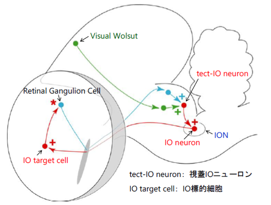

私たちは目で見た情報を脳で処理していると一般的に考えられていますが、実は脳から目（網膜）へ向かう「遠心性経路」も存在します。これを「向網膜系」と呼びます。
ウズラの場合、視蓋（中脳）にあるニューロンから始まり、視索視蓋核（ION）と呼ばれる中継地点を経て、最終的に網膜の細胞（RGC）へと情報が伝わります。このIONでの情報処理が非常に重要で、入ってきた情報の中から「特定の情報だけを選択的に増強して網膜へ返す」という働きをしています。これが、生き物が環境の中から必要な情報だけを抽出する「選択的注意」のメカニズムの基盤だと考えられています。

さらに近年の研究から、この向網膜系は単独で動いているのではなく、大脳の「高外套尖頂部（HA）」という領域からもトップダウンの制御（投射）を受けていることが分かってきました。私は電気生理学の手法を用いて、この「大脳（HA）から向網膜系へのネットワーク」がどのように結びつき、機能しているのかを明らかにしようとしています。
実は、ウズラという動物自体に特別な学術的優位性があるわけではありません。最大の理由は、研究を進める上での「極めて現実的で戦略的なメリット」です。
具体的には、「安価で仕入れやすいこと」「ハトなどを使った研究に比べて競合が少なく、独自の発見がしやすいこと」、そして「歴代の先輩たちが築き上げたウズラでの実験・手術ノウハウが蓄積されていること」です。
限られた時間の中でゼロから手探りするのではなく、先人の土台をフル活用し、競合の少ないニッチな領域でオリジナルの成果を出す。これが当研究室がウズラで実験を続けているリアルな理由です。